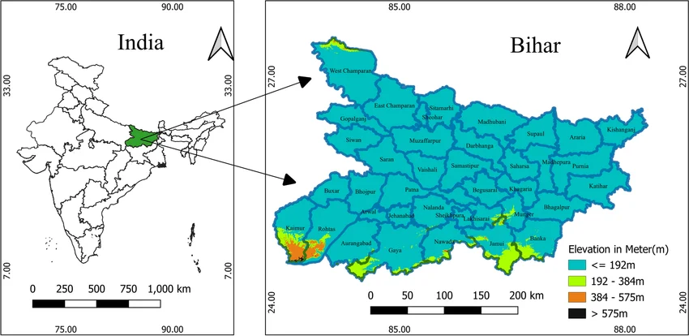

Total Area
Bihar is one of the important states of India located in the eastern part of the country. The total geographical area of Bihar is approximately 94,163 square kilometres. The state is surrounded by Nepal in the north, West Bengal in the east, Uttar Pradesh in the west and Jharkhand in the south. The fertile plains of the Ganga River make Bihar one of the most productive agricultural regions of India.
Bihar's land area is divided into 38 districts, each having different geographical features, landscapes and natural resources. The state includes river plains, fertile agricultural land, forests, hills and historical areas. Major rivers like the Ganga, Kosi, Gandak and Son play an important role in the geography, agriculture and lifestyle of the people. The diverse area of Bihar supports farming, tourism, industries and the overall development of the state.
Boundaries
| Direction | Border State/Country |
|---|---|
| North | Nepal |
| South | Jharkhand |
| East | West Bengal |
| West | Uttar Pradesh |
Major Rivers
- Ganga
- Kosi
- Gandak
- Son
- Bagmati